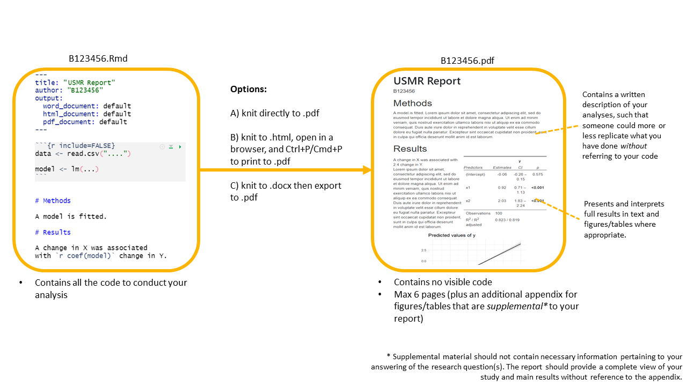

USMR Resit Report 2022/23
Your task is to describe and analyse some data in order to provide answers to a set of research questions. Analyses will draw on the methodologies we have discussed in lectures, readings and lab exercises.
Own work policy
Please note that this is an individual assignment and you are expected to work on your own with respect to both coding and writing
Similarity checks will be performed and further investigations will be carried out on the assignments exceeding a certain threshold.
What you need to submit
You are required to submit 2 documents.
- A final compiled report (.pdf format), detailing your analyses, results, interpretation and conclusions.
- No longer than 6 pages, excluding optional appendix (see below)
- Doesn’t contain visible R code. Sort of like the “analysis and results” section of a published paper, which describes, reports, presents and interprets (more detail in How-to-approach-the-questions).
- The .Rmd or .R document which reproduces the results you give in the report.
Page limit
Your report should be no longer than 6 pages.
if you are knitting to html, please open the html in a browser and print to pdf in order to check how many pages your submission takes up).
An OPTIONAL Appendix of maximum four pages1 can be used to present additional tables and figures, if you wish (but there is no requirement to do this).
The appendix is a good place for supplementary materials. By this we mean figures and tables that are not strictly necessary for the reader to understand and replicate your results, but provide additional context to your report.
- good use of the appendix:
“The model met the assumptions of linear regression with residuals showing a constant mean of approximately zero across the fitted values (see appendix Fig X), and …” - not so good use of the appendix:
“The model met assumptions (see appendix Fig X).”
Report Formatting
Beyond assessing your ability to create reproducible results, the focus of this assignment is not on the formatting of RMarkdown files; it is on implementing and interpreting analyses in R.
This means that you are more than welcome, for instance, to knit to word, and then to subsequently make edits to your text and formatting in the word document itself.2 The important thing to remember is that the data analysis and modelling results should match those produced in your RMarkdown/R file.
If you do wish to do your formatting in RMarkdown, then we suggest the following readings for help:
Feel free also to post formatting questions on the Piazza discussion forum.
A note on knitting .Rmd directly to pdf
Getting RMarkdown to knit directly to pdf can be a pain, and formatting is difficult.
We recommend:
- knit to .html, then Ctrl+P to print to .pdf
- knit to .docx, then export to .pdf

A template .Rmd file
We have provided a template .Rmd file for you to use, which can be downloaded from Learn. In the template, you will find empty code chunks for you to add R code to. However, you should feel free to create more if you wish: This is just a template, and is mainly designed to make your life easier. The template sets echo = FALSE for all code-chunks. This means that your R code (but not the output) is hidden in the compiled document.
If you use RStudio on the PPLS Server, you will need to upload the template .Rmd file to your space on the server in order to use it.
Submitting your files
pre-submission checks
Before submitting, we strongly advise you to check that your code runs. The easiest way to check this is by:
- if using RMarkdown: Check that your .Rmd compiles (i.e., can you
knityour Rmarkdown document into.html/.pdf/.docxwithout error?)
- if using an .R script: Clear your environment, restart your R session (top menu, Session > Restart R), and run your code line by line to see if any errors arise.
If you use RStudio on the PPLS Server, you may need to export the file to your computer in order to upload it to Turnitin.
Filenames
For both files which you submit, the filename should be your Exam Number with the appropriate extension, and nothing else.
For example, a student with exam number B047847 would submit two files:
- one of B047847.Rmd / B047847.R
- B047847.pdf
Where to submit
Go to the Assessments page on Learn, and look for “Assessment Submission”. There you will find an own-work declaration which requires marking as reviewed, before two submission boxes will be visible (one for each file), where you can submit.
Late penalties
Submissions are considered late until both files are submitted on Turnitin (see the PPLS policy on late penalties on the MSc Hub).
Grading
We are primarily marking your compiled report, and not your code
Grades and feedback are provided for the compiled reports, with marks awarded for providing evidence of the ability to:
- understand and execute appropriate statistical methods to answer each of the questions
- provide clear explanation of the methods undertaken
- provide clear and accurate presentation and interpretation of results and conclusions.
Why we still want your code
We still require your code so that we can assess the reproducibility of your work. We also use it as a way to give you extra marks based on the elegance of your coding and use of RMarkdown.
- Five points will be deducted from your final grade if your marker cannot determine how the results in your report were generated in your
.Rmd/.Rdocument (for example, if the code produces errors or produces values different from those reported). This means that a 75 out of 100 becomes 70 out of 100. - Up to ten points will be added for good use of R and RMarkdown (for example, where code is elegant, or when inline R code is used to report results in the text). For example, a 70 might be raised up to 80.
How to approach the questions
For each of the questions below, the compiled report (final .pdf) is expected to include:
- Clear written details of the analysis conducted and how it can provide an answer the question, including transparency with regards to decisions made about the data prior to and during analyses.
- Results, in appropriate detail (for instance, a test statistic, standard error and p-value, not just one of these).
- Presentation of results where appropriate (in the form of tables or plots).
- Interpretation (in the form of a written paragraph(s) referencing relevant parts of your results) leading to a conclusion regarding the question.
The code you write in your submitted .Rmd/.R file should successfully undertake the analysis described in A), which returns B). You should also include the code to produce C).
Important (Helpful) Tips:
The compiled .pdf document should not contain visible R code, meaning that a large part of the challenge comes in clearly describing all aspects of the analysis procedure.
A reader of your compiled .pdf document should be able to more or less replicate your analyses without referring to your R code.
Write as if the reader has a very basic understanding of statistics and does not necessarily use R.
You do not need to include information about the study background or the collection of the data in your report.
Any Questions?
This document contains a basic overview of the task and of how to submit it. If you have any questions concerning the coursework report, we ask that you post them on the designated section of the Piazza discussion forum on Learn. If you have a question, it is likely your classmates may have the same question. Before posting a question, please check the on-line board in case it has already been answered.
THE COURSEWORK
Background & Study Aims
An organisation is interested in researching the factors that influence employee job satisfaction and feelings of manager-support. The organisation knows from previous surveys that their older employees tend to report being happier in their jobs, and they assume this is due to older employees having spent more time in their roles.
Previously, all their employees worked in the office full time, but the last few years has seen a big change in working patterns. They would like to investigate how different working styles (office, hybrid, remote) might be associated with differences in job satisfaction. They are specifically interested in whether this might differ between those who work on team-based projects in comparison to those who work on solo-projects.
In addition, they are conducting a review of their management structure, and would like to explore whether, after accounting for differences due to age and experience in the role, working styles and project types influence whether or not employees feel supported by their manager.
Methods
A random sample of 194 employees was surveyed. They filled in a questionnaire on job-satisfaction (measured on 10-items scored on a sliding scale 0 to 100), and indicated whether or not they felt supported by their manager. The HR department have also extracted information for these employees on their age, years in the role, whether they are assigned to team or solo projects, and whether they work in the office, fully remotely, or hybrid.
Getting the data
You can access the data by running the following lines, where you replace the words YOUR EXAM NUMBER with your exam number, leaving the quotes (please note, your exam number consists of the letter “B” followed by a six digit number and can be found on your student card: See here for more information).
library(tidyverse)
source("https://edin.ac/407xSOV")
get_my_data("YOUR EXAM NUMBER")You may want to put the (edited) lines above at the beginning of your analysis script to ensure that you are analysing the correct data.
After running the code above, data from the HR department are found in the object hrdata (see Table 1) in your environment. Data from the employee survey responses are in the object survdata (see Table 2).
Please note: The data you are analysing is not real! Although we have tried to make the values plausible, you don’t need to know anything about job satisfaction or working patterns in order to complete the report, which should be written as if the data was collected as described.
Note also that the data you obtain will be unique to you, which means that the results of any statistics you run will also be unique to you. In some cases, you may find different significant effects to those of your classmates: This is nothing to worry about, and your markers will know how to check your individual results.
| variable | description |
|---|---|
| employeeid | Employee ID number (every employee has a unique number) |
| workingstyle | Working Style ('office' = Fully office based work, 'hybrid' = Hybrid working patterns, 'remote' = Fully remote working) |
| project | Project Type ('solo' = employee has sole responsibility for entire project, 'team' = responsibility for project is divided between members of a team of employees) |
| years_in_role | Number of years an employee has been with the organisation |
| age | Employee age (in years) |
| variable | description |
|---|---|
| employeeid | Employee ID number (every employee has a unique number) |
| manager_support | Whether employee feels supported by their manager ('0' = does not feel supported, '1' = feels supported) |
| jobsat | Job satisfaction score (average of scores on 10 items each measured on a sliding 0-100 scale) |
Report Tasks
0. Check the data!
Researchers can‚Äôt always be trusted to provide perfect data (and your course team is no exception üòà). Make sure you check over your data before starting on the report.
1. Who are the employees? (Describe and Explore)
Suggestion: 2 pages
Hint:
when providing a description of your sample, think about the tradeoff between space used (by, for example, a figure or table) and detail (in writing). There’s no right way to describe the sample, but readers will want to understand the basic “shape” of the data.
Prior to conducting the main analyses, the researchers would like some descriptive statistics on the employees that they have surveyed. In addition, they would like you to test and report on:
- Whether the distribution of working styles is distributed differently between employees on different project types.
- Whether job satisfaction scores are significantly correlated with employee ages.dominance significantly differs between primates born in captivity and those born in the wild.
- Whether job satisfaction significantly differs between employees working on solo projects and those working on team-based projects.
Provide a suitable brief description of the dataset, and then answer each of the questions above using an appropriate statistical test.
2. Happy workers?
Suggestion: 2 pages
The first major research aim is to investigate which factors influence employee job satisfaction.
Conduct and write up appropriate analysis/analyses to address this question.
Take care to keep in mind the study aims.
3. Managerial Support
Suggestion: 2 pages
The second research aim is to explore what factors make employees more or less likely to feel supported by their manager.
Again, your task is to conduct and write up appropriate analysis/analyses to address this research aim of the study.
Footnotes
meaning that your final
.pdffile should be max 10 pages↩︎https://rstudio.ppls.ed.ac.uk supports knitting to .html, .pdf and word (.docx); choose by clicking the drop-down arrow next to “Knit”.↩︎